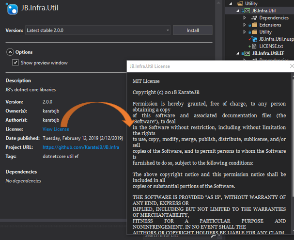
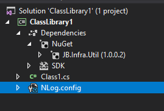

Follow the suggestions from Microsoft Document:
Go the the root path of target project,
$ nuget specThis command will create a <>.nuspec file into the project. The file contains the following metadata:
<?xml version="1.0"?>
<package >
<metadata>
<id>$id$</id>
<version>$version$</version>
<title>$title$</title>
<authors>$author$</authors>
<owners>$author$</owners>
<licenseUrl>http://LICENSE_URL_HERE_OR_DELETE_THIS_LINE</licenseUrl>
<projectUrl>http://PROJECT_URL_HERE_OR_DELETE_THIS_LINE</projectUrl>
<iconUrl>http://ICON_URL_HERE_OR_DELETE_THIS_LINE</iconUrl>
<requireLicenseAcceptance>false</requireLicenseAcceptance>
<description>$description$</description>
<releaseNotes>Summary of changes made in this release of the package.</releaseNotes>
<copyright>Copyright 2019</copyright>
<tags>Tag1 Tag2</tags>
</metadata>
</package>We can update the right information on the .nuspec file or
properties argumentThe supported Replacement tokens are as following,
| Token | Value source | Value |
|---|---|---|
| id | Project file | AssemblyName (title) from the project file |
| version | AssemblyInfo | AssemblyInformationalVersion if defined, otherwise AssemblyVersion |
| author | AssemblyInfo | AssemblyCompany |
| title | AssemblyInfo | AssemblyTitle |
| description | AssemblyInfo | AssemblyDescription |
| copyright | AssemblyInfo | AssemblyCopyright |
We can set the AssemblyInfo in Visual Studio,
Same as the ones of dotnet framework except $authors$
| Token | Value source | Value |
|---|---|---|
| authors | AssemblyInfo | AssemblyCompany |
In dotnet core project, we can write/find the above informations in project file or in Visual Studio [Project properties]->[Package] as following,

This is an example for using Replacement tokens in .nuspec file for dotnet core class library project,
<?xml version="1.0"?>
<package >
<metadata>
<id>$id$</id>
<version>$version$</version>
<title>$title$</title>
<authors>$authors$</authors>
<owners>$authors$</owners>
<!--<license type="file">LICENSE</license>-->
<license type="expression">MIT</license>
<projectUrl>https://github.com/KarateJB/JB.Infra</projectUrl>
<requireLicenseAcceptance>false</requireLicenseAcceptance>
<description>$description$</description>
<releaseNotes>
v1.0.0.0
Awesome package(?)
</releaseNotes>
<copyright>$copyright$</copyright>
<tags>dotnetcore util ef</tags>
</metadata>
</package>license tag allows the pattern:
<license type="expression | file" />
ex.
<license type="expression">Apache-2.0</license>
<license type="file">LICENSE.txt</license>(Supported format: md, txt)
Reference: Packaging License within the nupkg
$ nuget pack -properties <name>=<value>;<name>=<value>For example,
$ nuget pack -properties tags="dotnetcore util ef";description="My nuget package"$ nuget pack <nuspec_path | project_path> [options] [-Properties ...] For more options. see pack command (NuGet CLI)
For example,
$ nuget pack ../xxx/xxx.csprojNotice that to pack another project which has no
.nuspecfile will have some bugs, like theAuthorproperty will be set to the value ofCompanyfrom Project file.
Thus it’s recommanded to pack the project which has local.nuspecfile.
Or the most useful case is set the configuration and version:
$ nuget pack xxx.csproj -Properties Configuration=Release -Version 0.0.0.1$ dotnet build --configuration release
$ nuget pack JB.Infra.Util.csproj -Properties Configuration=Release -Version 0.0.0.1Result:

<?xml version="1.0"?>
<package >
<metadata>
<!-- skip -->
<dependencies>
<dependency id="Microsoft.Extensions.Caching.Memory" version="2.2.0" />
<dependency id="Newtonsoft.Json" version="11.0.2" />
</dependencies>
</metadata>
</package>As mentioned above, we can use the file type as <license type="file"> in .nuspec file. But we have to define the file in the file list like following.
<?xml version="1.0"?>
<package >
<metadata>
<!-- skip -->
<license type="file">LICENSE.txt</license>
</metadata>
<files>
<file src="LICENSE.txt" target="" />
</files>
</package>Which will results in the following information on Nuget package,

Specify the file list in .nuspec to include other .dll/.pdb/… files into the package.
<?xml version="1.0"?>
<package >
<metadata>
<!-- skip -->
</metadata>
<files>
<file src="LICENSE.txt" target="" />
<file src="..\JB.Infra.Util.EF\bin\$configuration$\netstandard2.0\JB.Infra.Util.EF.dll" target="lib\netstandard2.0\JB.Infra.Util.EF.dll" />
<file src="..\JB.Infra.Util.EF\bin\$configuration$\netstandard2.0\JB.Infra.Util.EF.xml" target="lib\netstandard2.0\JB.Infra.Util.EF.xml" />
<file src="..\JB.Infra.Util.Logging\bin\$configuration$\netstandard2.0\JB.Infra.Util.Logging.dll" target="lib\netstandard2.0\JB.Infra.Util.Logging.dll" />
<file src="..\JB.Infra.Util.Logging\bin\$configuration$\netstandard2.0\JB.Infra.Util.Logging.xml" target="lib\netstandard2.0\JB.Infra.Util.Logging.xml" />
</files>
</package>Sometimes we would like a content file to be installed into the project which has installed our Nuget package. For example, a NLog.config shall be installed as a content file when the Logging package is installed.
Specify the key target path: contentFiles\any\any\<ContentFile> like following, (DO NOT remove or modify contentFiles\any\any\!)
<?xml version="1.0"?>
<package >
<metadata>
<!-- skip -->
</metadata>
<files>
<file src="..\JB.Infra.Util.Logging\NLog.config" target="contentFiles\any\any\NLog.config"/>
</files>
</package>and the content file will be placed under the root directory of project:

dotnet list package --source MyNugetServer
dotnet add package JB.Infra.Util --version 0.0.0.50 --source MyNugetServer
nuget sources remove -name MyNugetServer
nuget sources add -name "MyNugetServer" -source http://xxxxxxxx2:8080/nuget -username xxxx -password xxxx
nuget sources add -name "MyNugetServer" -source http://xxxxx:8080/nuget -username xxxx -password xxx -configfile %AppData%\NuGet\Nuget.config
//C:\Users\jb\AppData\Roaming\NuGet
nuget list -Source MyNugetServer
nuget source list
nuget delete JB.Infra.Util 0.0.0.30 -Source MyNugetServer -apikey xxxxxxx